Editing Sphinx documents
By this stage you should have the following:
A working git installation.
Visual Studio installed with a few useful plugins.
Python3 installed.
So lets build a basic document, single page with a standard table of contents. And then we’ll build it into html with the locally installed python and sphinx.
Create a new working folder
Working folders are a little like projects. You can think of the folder as a new project directory for your documentation.
Open up VS Code. You should be at the welcome screen. You can click on the “Open Folder” link, or go via the menu to the selection.
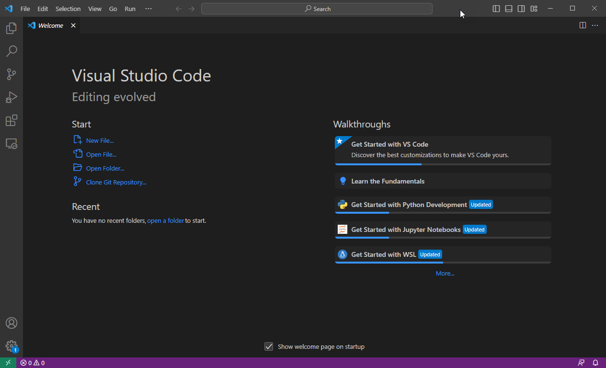 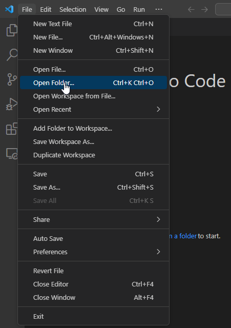Navigate to a directory where you would like to store your documentation ‘projects’ and click on New Folder. I have chosen Documents/VS Code/ and created a new folder called sphinx-demo
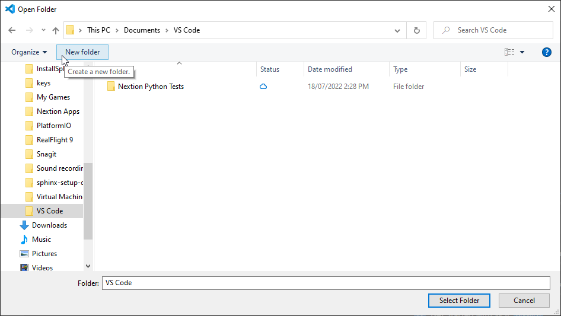 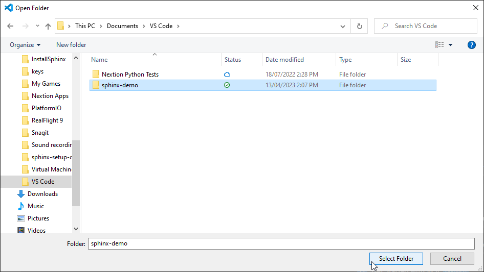Click on the newly created folder and click “Select Folder”.
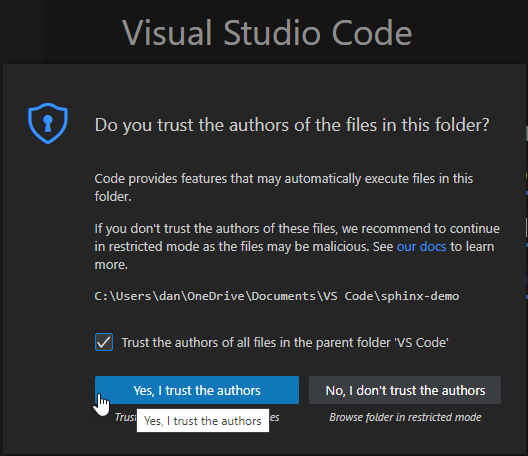You will be asked to confirm if you trust the authors of this folder. Since we are going to be the authors, you can click Yes.
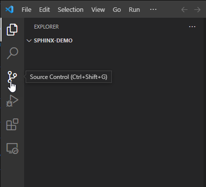Set up git for this project
Next we need to intialise the repository for git. Hit Ctrl + Shift + G or click on the “Source Control” button on the left hand side.
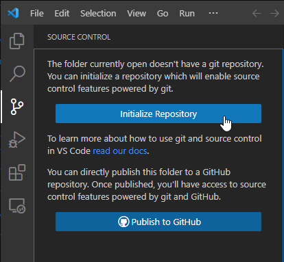Then click on “Initialize Repository” and the git database will be created. It is in a directory called .git but it is hidden from view.
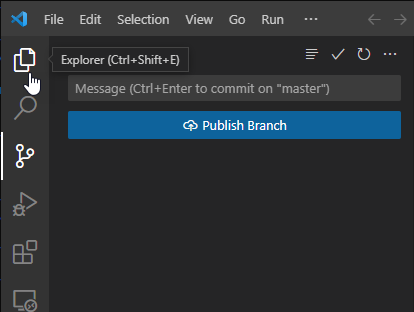Then click on “Explorer” button to get back to the main source navigation window.
Lets start by creating two files. These are git files for controlling some of git’s functionality.
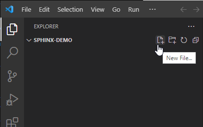 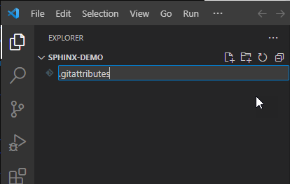Click on the new file icon in the Explorer and then type the name of the file: .gitattributes
Next, paste the following text into the file:
# Set the default behavior, in case people don't have core.autocrlf set.
* text=auto
# Explicitly declare text files you want to always be normalized and converted
# to native line endings on checkout.
#*.c text
# Declare files that will always have CRLF line endings on checkout.
#*.sln text eol=crlf
# Declare files that will always have LF line endings on checkout.
*.sh text eol=lf
# Denote all files that are truly binary and should not be modified.
*.png binary
*.jpg binary
This file just makes sure that .sh files are kept as unix LF encoding and .png/.jpg files are always treated as binary.
Repeat the process for .gitignore which will tell git which files to never consider part of the source code.
# VSCode Sphinx Ignore
# For now lets jsut store the sources.
/docs/build
# Put local python envs here. Only relevant when using local python.
/.env*
/docs/build is the location of our build docs packages and /.env* is the place where we will store our python environments (no need to add these to the source code)
Notice how there is now a small ‘2’ on the source control icon? This tells us that there are two files changed since the last ‘commit’. The fact that the filenames are green also tell us they are new files (yellow would indicate a changed file). We will commit the changes later.
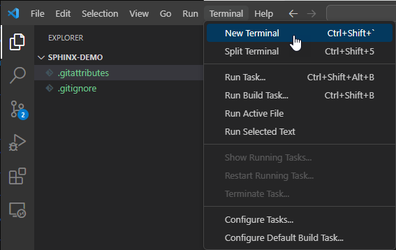Set up python for this project
Next we will create our python environment. Open a new ‘terminal’ window by selecting . You should now see a powershell window in the bottom right of VSCode.
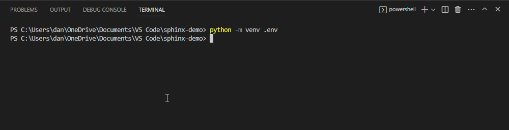Type the following command: python -m venv .env
You should notice that the .env folder appears in your explorer. It should be greyed out since we told git to ignore anthing matching /.env*.
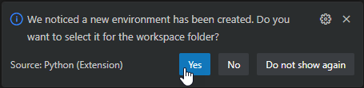Hopefully you will see the popup asking if you want to make it the default for the workspace folder. Click ‘Yes’. Starting a new terminal from now on will execute the command to set the python virtual environment to .env. This can be seen by a green “(.env)” at the start of the line in the terminal.
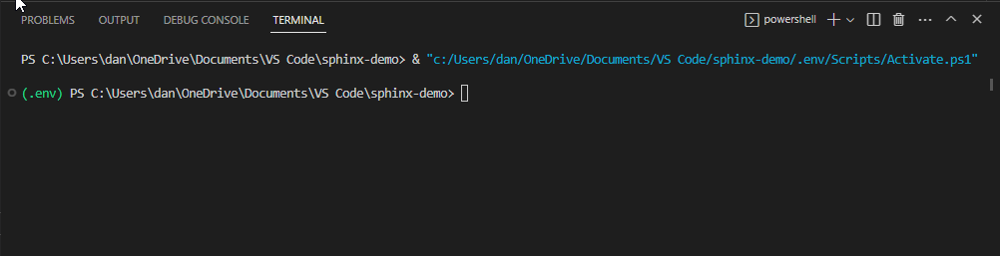Install Sphinx
In a new terminal window, type the following to install Sphinx into our python environment. To keep things neat and tidy, lets put our document stuff in a subdir called docs. In the terminal window, execute the following commands:
mkdir docs
cd docs
pip install sphinx
Pip will install the python package and it’s dependencies directly into your virtual python environment (.env). Now we can initialise a new sphinx document.
You can do that by issuing the command sphinx-quickstart in the same terminal window.
It will ask you a number of questions. Here are my suggestions
Setting |
Suggested Value |
Notes |
|---|---|---|
Separate source and build directories |
Yes |
It makes for a cleaner install. |
Project name |
Sphinx Demo |
This text will appear in your docs |
Author Name(s) |
Your name |
Can also be team name or dept. |
Project releases |
1 |
Whatever versioning you wish to use |
Project language |
en |
Corporate default |
When the quickstart process is finished, it will create some files in the current directory (docs). Namely:
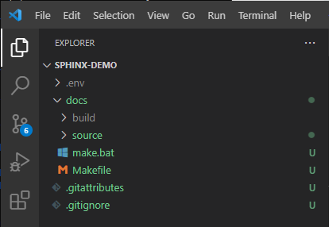Directory |
Function |
|---|---|
docs/build |
The directory where our packages will be built. It should be greyed out since we elected to ignore it in gitignore. |
docs/source |
The directory containing the RST source files and python config file. |
docs/make.bat and /docs/Makefile |
These are scripts used for building the packages. |
Edit our first document
In the explorer window, navigate to docs/source/index.rst and click on it to open it in an editor tab. As a quick example, lets add some RST text and generate the html pages.
Just above the “Indices and tables” heading, paste the following text…
.. note::
This is note text. If note text runs over a line, make sure the lines wrap
and are indented to the same level as the note tag. If formatting is
incorrect, part of the note might not render in the HTML output.
Notes can have more than one paragraph. Successive paragraphs must indent
to the same level as the rest of the note.
.. warning::
Warnings are formatted in the same way as notes. In the same way, lines
must be broken and indented under the warning tag.
.. error::
This is an error!
We can also do math: Since Pythagoras, we know that :math:`a^2 + b^2 = c^2`.
For lists, just place an asterisk at
the start of a paragraph and indent properly. The same goes for numbered
lists; they can also be auto numbered using a ``#`` sign.
* This is a bulleted list.
* It has two items, the second
item uses two lines.
#. This is a numbered list.
#. It has two items too.
1. This is a different numbered list.
2. It has two items too.
Nested lists are possible, but be aware that they must be separated from the
parent list items by blank lines.
* this is
* a list
* with a nested list
* and some subitems
* and here the parent list continues
Save the file and lets build the HTML package.
Build html docs
In the terminal window, type the following commands. (Make sure you are still in the docs directory)
.\make clean
.\make html
The first command makes sure the old html files are removed, and then the second command builds it again. If all went well, you should see under the docs/build directory, a new directory called ‘html’ (and another called doctrees - you can ignore that)
Live Server
If you installed the “Live Preview” plugin, you can start a basic local html server to view your changes whenever you rebuild the documentation in html. This is really handy for seeing your work progress.
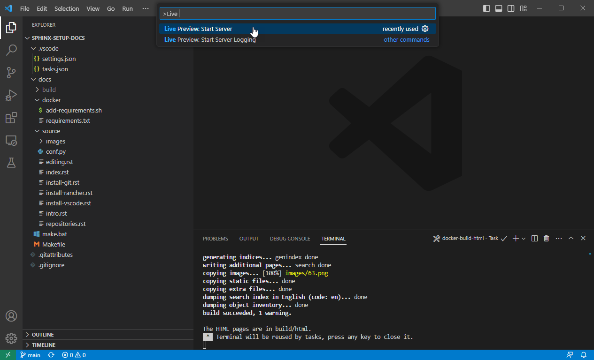In the search bar (Ctrl-Shift-P) search for “> Live Preview” and click on “Live Preview: Start Server”. You might get a windows firewall warning to allow the traffic.
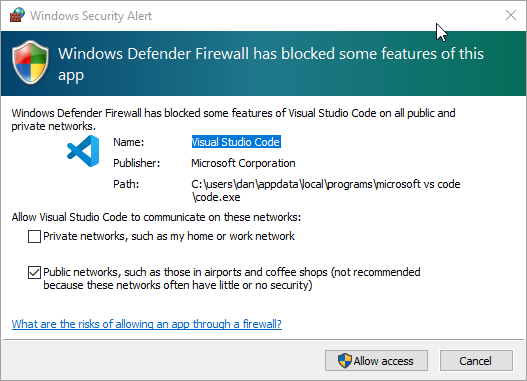{kind=link}
It should open a tab to http://127.0.0.1:3000/ but I find it easier opening that in a new web browser. It will refresh the page with every change to the code. If you navigate to http://127.0.0.1/docs/build/html/ you should see your documentation.
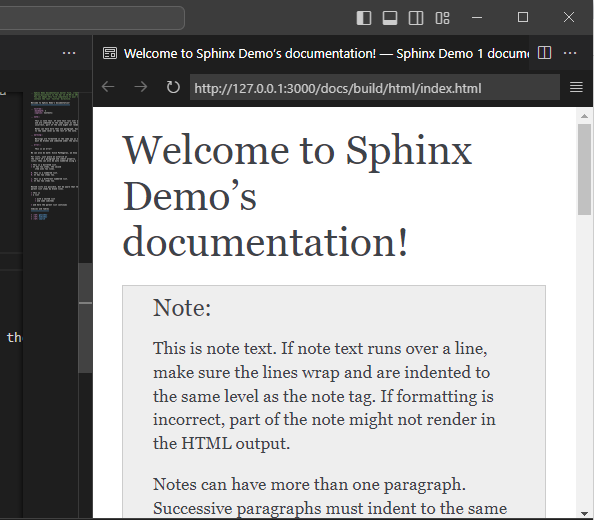The page looks nice, but there’s a few things we should change. Firstly, remove the “Indices and tables” section at the bottom. It does not really do much for us. Secondly, lets install a nicer html theme (the ‘read the docs’ theme).
Open the conf.py file in the docs directory. This file is used to define how sphinx itself is configured.
Change the html_theme setting from alabaster to “sphinx_rtd_theme”. And above that line, add another line to import the python module for the RTD theme. It should look like this:
import sphinx_rtd_theme
html_theme = 'sphinx_rtd_theme'
But before we can build that, we have to install the sphinx_rtd_theme module into our python environment. So in a terminal window, type the following.
pip install sphinx_rtd_theme
Now, run the make clean ; make html commands again to rebuild the docs. If you go back to your browser and refresh you should see a big change.
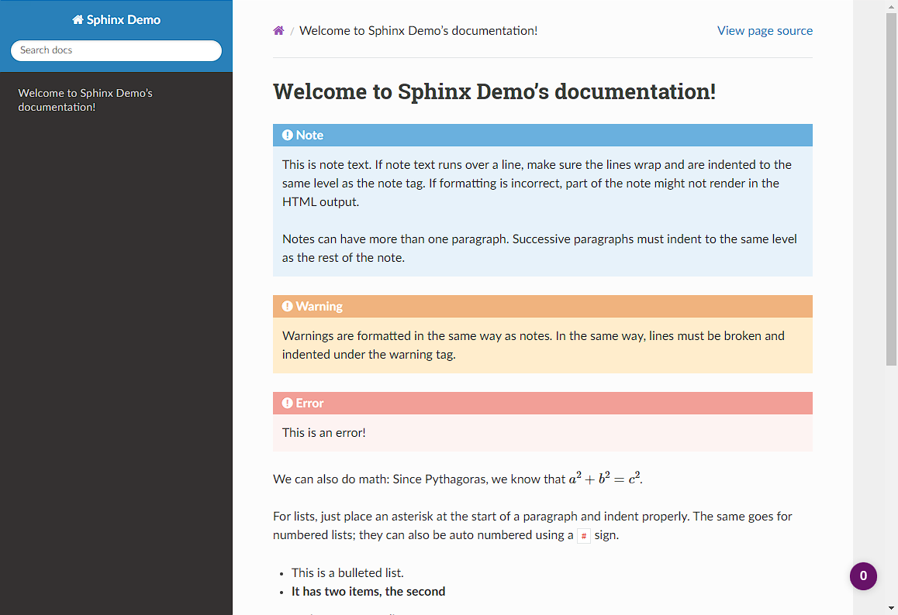WOW, that looks a whole lot nicer!
Tasks
Next, to make things a little easier. Lets make some tasks for building our html pages.
Hit Ctrl+Shift+P to bring up the VSCode command dialog. It’s a way for searching for a command when you don’t know how to find it in the menu (or it does not have a key binding). Type ‘tasks’, choose “Tasks: Configure Task” and select “Create tasks.json from template”. Choose ‘Others’ as the task template.
It will open an editor tab with a blank tasks.json file in it. It looks like this:
{
// See https://go.microsoft.com/fwlink/?LinkId=733558
// for the documentation about the tasks.json format
"version": "2.0.0",
"tasks": [
{
"label": "echo",
"type": "shell",
"command": "echo Hello"
}
]
}
Change that for the following JSON code. Basically, we’re deleting the ‘echo’ task and adding two more, setting one of them as the default build task.
{
// See https://go.microsoft.com/fwlink/?LinkId=733558
// for the documentation about the tasks.json format
"version": "2.0.0",
"tasks": [
{
"label": "local-build-html",
"type": "shell",
"dependsOn": ["clean"],
"command": "source ../.env/bin/activate; make html",
"options": {
"cwd": "${workspaceFolder}/docs"
},
"windows": {
"command": "..\\.env\\Scripts\\Activate.ps1; .\\make.bat html",
"options": {
"cwd": "${workspaceFolder}/docs"
},
},
"group": {
"kind": "build",
"isDefault": true
},
"problemMatcher": []
},
{
"label": "clean",
"type": "shell",
"command": "source ../.env/bin/activate; make clean",
"options": {
"cwd": "${workspaceFolder}/docs"
},
"windows": {
"command": "..\\.env\\Scripts\\Activate.ps1; .\\make.bat clean",
"options": {
"cwd": "${workspaceFolder}/docs"
},
},
"group": {
"kind": "build",
"isDefault": false
},
"problemMatcher": []
}
]
}
In the code above you can see two tasks defined. ‘local-build-html’ and ‘clean’. These just do what we were doing manually with the make clean and make html commands. The only difference is we have to tell VS Code where to work from (cwd), and we have to set the python environment first (Activate.ps1). There are also two commands defined in each task, one for windows (..\\.env\\Scripts\\Activate.ps1; .\\make.bat <something>). This overrides the other command, which is the unix corresponding unix command (source ../.env/bin/activate; make <something>).
The ‘group’ section of the JSON data just tells VS Code that these are build tasks, and one of them is the default build task. Finally, in the ‘local-build-html’ task, we have a ‘dependsOn’ setting. This makes sure that the ‘clean’ task gets executed always before the ‘local-build-html’ task.
Once you have these saved to tasks.json you should be able to hit Ctrl+Shift+B and the html files will be re-build automatically.
Saving Changes - the git way
So saving the files happens normally of course but when we have git installed we can also save progressive versions. Git is a little complicated but I’ll go over the basics. Your code is stored, not just in the working directory, but also in the git database under the .git directory. For each change to one or more files you can save extra info. Firstly, a small commit message (required) to mention what your changes are, but you can also add tags to a git commit so that it’s clear what stage the full package is… For instance, you might commit the current changes with “My first commit.” and then add a tag that gives the whole package a version number. Tags are optional so we’ll ignore them for now.
Click on the ‘Source Control’ button and we will make our first commit.
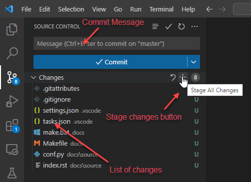In this image you can see there is a text box for the commit message. And below that the list of changes. Now, we need to tell git which changes we wish to commit to the git repo. Clicking on the + on the changes row will let us add them all.
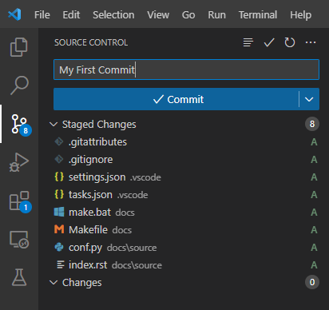Now we can see all of our changes are staged under the ‘Staged Changes’ branch and nothing is left in the ‘Changes’ branch. Enter a commit message and click ‘Commit’. You should see all the changes disappear and the change counter on the left ‘Source Control’ button disappear as well.
When you navigate back to the Explorer, you will see in your source tree all of the green files are now white.
Saving to github
So we now have our local repository, but the files are all still on our local machine. One of the great things about git is that it’s designed to work with remote (shared even) repositories. So let’s save our git repo to github. If you don’t already have a github account, go and create one.
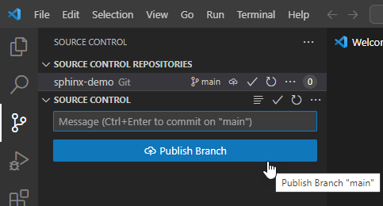Go back to the ‘Source Control’ section and you should see that the commit button now says “Publish Branch”. Click on that and you will be asked to ‘allow’ the inbuilt github extension to authnticate to github. Click ‘Allow’. It will open a web browser when you log in and complete the authentication, an oauth token will be created and stored in the windows credentials store.
You should now see two options… One for creating a public and one for a private repo. Choose one. VS Code will now attempt to create the remote repo on github.com. If it already exisst it will inform you and will not push the code. Otherwise VS code will link your local repo to the newly created remote and publish (push) the code to the new repo.
Note
You might be asked to authenticate to github again, this time it’s to trust the ‘git credentials manager’ or the ‘git ecosystem’. This is to allow the git command line tools to also interact with your github account.
What to do if the repo exists, and it is the one you want to use? Well normally we would have cloned that repo on our local machine instead of creating a repo locally and pushing it to github, so that situation should not really happen.
In the next section, I describe a way that you can use github infrastructure to build the html and pdf changes, and just save them to a different branch of our same repo.